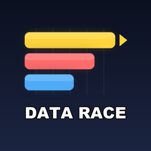

Page URL: https://navjeetmalli-pixel.github.io/data-race/privacy.html
Data Race Uploader ("the Application") is operated by Navjeet Singh Malli, an individual based in Victoria, Australia ("we", "us"). Contact: navjeetmalli@gmail.com.
The Application is a private tool that uploads data-visualization videos to our own YouTube channel (Data Race) and sends the same videos as drafts to our own TikTok account. It has exactly one user: the channel owner. It is not offered to the public and has no end users other than the owner.
The Application uses YouTube API Services. By using the Application, the owner agrees to be bound by the YouTube Terms of Service. Google's handling of data is described in the Google Privacy Policy.
The Application uses the TikTok Login Kit and Content Posting API (scopes user.info.basic and video.upload) only to send videos to the owner's own TikTok inbox as drafts. It reads only the owner's TikTok display name and open ID, to confirm the connected account. A TikTok refresh token is stored in the macOS Keychain on the owner's computer and can be revoked at any time in the TikTok app under Settings > Security > Manage app permissions. Use is subject to the TikTok Terms of Service and TikTok Privacy Policy.
Through YouTube API Services the Application accesses only the owner's own data: channel ID and title, the IDs, titles, descriptions, tags, privacy status and upload status of videos it uploads, the IDs and titles of the owner's playlists, the public view/like/comment counts of the owner's own videos, and the text of public comments posted on the owner's own videos (used only to find requested comparison topics). It does not access subscriptions, watch history, YouTube Analytics reports, or any data about other channels.
The Application stores, on the owner's own computer only: (a) an OAuth 2.0 refresh token in the macOS Keychain, used to authenticate to YouTube; (b) the IDs of videos it has uploaded and playlists it has created, in small local text files, so that it does not upload the same video twice; (c) a short list of comparison topics requested in comments (the topic text, the comment ID and whether it was handled; no commenter names or profile data), deleted once the requested video is published or after 30 days; (d) weekly view and like totals of the owner's own videos, used to rank topics. No YouTube data is stored on any server, shared with any third party, sold, or used for advertising. Stored data is not retained longer than needed and can be deleted at any time (see section 8).
None. The Application sends data only to YouTube and TikTok (the video files and their metadata) and receives data only from them. It uses no analytics, advertising or tracking services.
The Application does not use cookies. This website does not set cookies.
The owner can revoke the Application's access to their YouTube account at any time via the Google security settings page. Locally stored tokens and IDs can be deleted by removing the Keychain item and the local state files, which removes all data the Application holds.
The Application is not directed at children and collects no personal information from anyone.
If this policy changes, the updated version will be published on this page with a new date.
Questions about this policy: navjeetmalli@gmail.com.